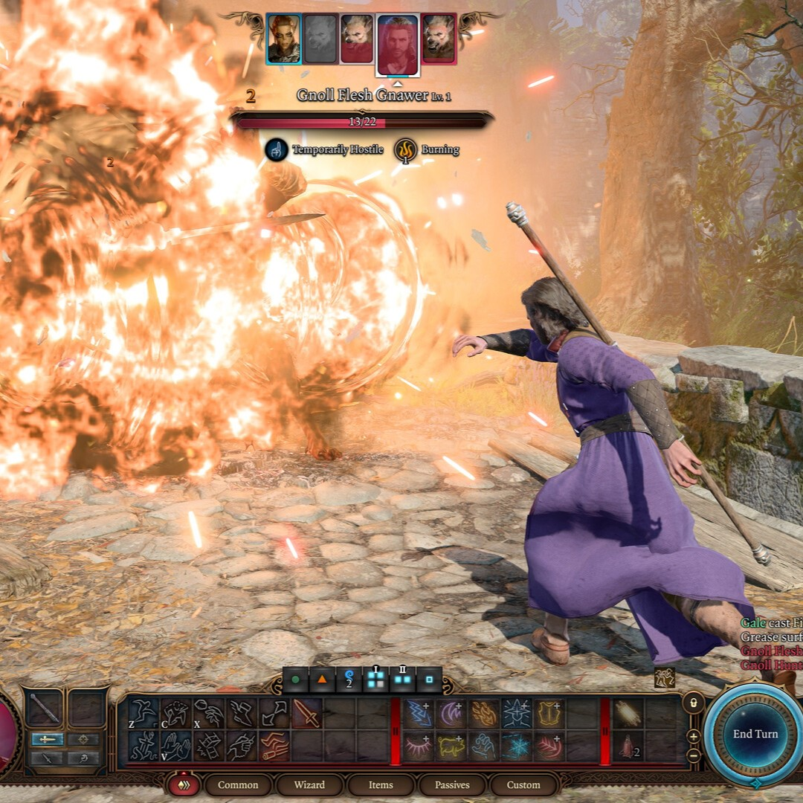
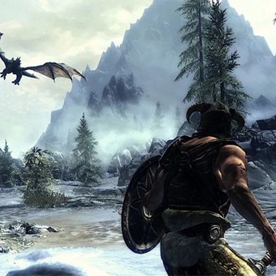

Os 30 Melhores Jogos de PC de 2023
2023 foi um ano incrível para o mundo dos jogos de PC, com títulos que desafiaram as expectativas e elevaram os padrões de qualidade. Desde experiências imersivas de mundo aberto até histórias emocionantes e mecânicas de jogabilidade inovadoras, aqui estão os 30 melhores jogos de PC de 2023.

10 Jogos Similares ao The Elder Scrolls V: Skyrim
Se você é fã de Skyrim, provavelmente procura experiências parecidas, com grandes mundos abertos, elementos de RPG e imersão profunda. Aqui está uma lista de 10 jogos que podem satisfazer sua sede por aventuras épicas, juntamente com suas descrições e requisitos mínimos..